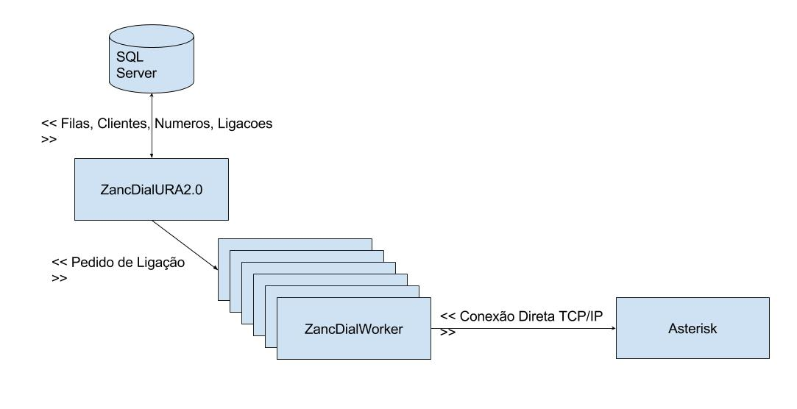
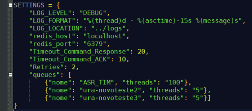
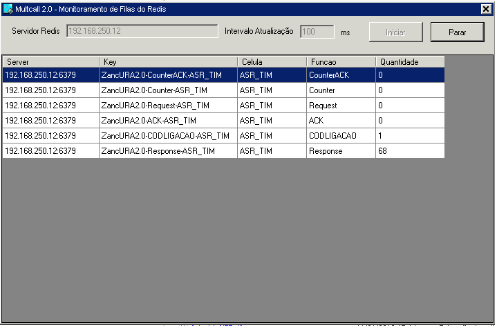

Multcall e URA 2.0
Guilherme Bencke
Porto Alegre - Janeiro, 2018
Oque é o Multcall
O Multcall é o sistema discador desenvolvido pela própria zanc pelos ultimos 10 anos. Ele é escrito em .NET e utiliza um banco de dados SQL Server tanto para os dados internos da aplicação quanto os dados do négócio (Clientes, Ligações, Contatos, etc...)
Atualmente a Zanc tem testado diversos outras plataformas de discagem, mas, o retorno ao negócio não tem sido significativo o suficiente para justificar o custo adicional de licenças de um software terceiro.
Arquitetura Atual do MultCall 1.0
Problemas com o Multcall 1.0
Com o passar do tempo, as limitações do Multcall 1.0 começaram a aparecer. Em termos concretos, os problemas do Multcall Atualmente são:
- Escalabilidade: Capacidade de facilmente aumentar o numero de operadores logados.
- Versao Asterisk: Atrelamento fixo do Multcall a uma especifica versão do Multcall
- Balanceamento de Carga: Dificuldade em distribuir a carga de ligações entre diversas centrais.
Escalabilidade (1)
Um dos grandes problemas com o Multcall 1.0 é que o mesmo banco de dados serve tanto para os dados do negocio quanto para os dados internos da aplicação (Direitos, Operadores Disponiveis, Filas de Discagem, etc...), dessa forma, o quanto mais operadores você colocar em uma operação, mais o sistema irá ter a sua performance degradada.
Escalabilidade (2)
Um dos exemplos mais claros é a questão das leituras de parametros, pois por ser um sistema em tempo real em que a reconfiguração dos parametros do sistema tem que ter impacto direto na operação, essa leitura de parametros (que não pertencem ao negocio em si) pode causar lentidão em operações de sistema como a carga e/ou manipulação de um mailing.
Versão Asterisk
A Versão atual do MultCall conecta o codigo .NET diretamente a Central Telefonica, oque causa 2 problemas:
- Não existe suporte oficial do Asterisk ao .NET, dessa forma, deve haver uma "Adaptação" de bibliotecas terceiras para que funcione corretamente
- Essa adaptação tem que ser testada em todas as versões do Asterisk, pois não é garantido que funcionará em todas as situações.
Balanceamento de Carga
Atualmente para balanceamento de carga, o Multcall se conecta com o AsteriskProxy que é um programa provido pelo próprio asterisk para balanceamento e distribuição de carga. Esse software não é mais suportado pelo Asterisk, oque causa uma série de problemas de suporte, além desse programa ser relativamente instável oque causa paradas na operação.
Arquitetura MultCall 2.0

Multcall 2.0
Como podemos ver na figura anterior, para resolver os 3 problemas atuais do Multcall, criamos uma camada intermediaria entre o multcall e a central aonde colocar um banco de dados de alta performance chamada Redis.
Dessa forma, o Multcall escreve no banco de dados Redis sem contato com a central telefonica em si, e na central telefonica instalamos um script em python que realiza a discagem propriamente dita.
Redis (1)
Redis é um banco de dados do tipo "Chave-Valor", ou seja, Não-SQL, de alto desempenho e que roda em memória. Objetivo dele é armazenar e disponibilizar rapidamente os dados internos da aplicação, ou seja, aqueles dados que não interessam ao Negócio, ao NEC, e que jamais serão alvos de Relatorios.
Redis (2)
Por ele não permitir consultas em "Massa" como no SQL, e sim um valor apenas por vez, ele é muito escalavel e dificilmente tem problemas de sobrecarga, ao contrario do SQL Server, em que operações de Gerenciamento podem ter impacto na performance do sistema como um todo.
Python
Atualmente, a interface padrão com o Asterisk é feita através da linguagem de programação Python, ela é suportada em todas as versões do Asterisk tanto presentes, passadas quanto futuras.
O fluxo de controle das ligações fica no python que usa uma série de filas do Redis para comunicação com o Discador. Usando o Redis como meio de comunicação entre o discador e a central, e usando o python dentro da Central, podemos garantir que o Mulcall 2.0 irá funcionar em qualquer versão presente, passado e futura do Asterisk
Fluxo de Filas do Redis
Gestão do Multcall (1)
Em termos de Gestão do Multcall, nada muda, tudo continua nas mesmas telas e o detalhe de se usar os DialWorkers ou o Redis para comunicação com a Central é apenas uma questão interna de configuração. Existem 5 parametros que configuram o Multcall para usar o REDIS:
Gestão do Multcall (2)
- Redis Ativar: Ativa a comunicação com a Central via Redis
- Redis URL: URL que aquele Convenio ou Celula irá se conectar ao Redis
- Redis Workers Ligaca:Determina o numero de threads que será usada para gerar ligações ao Redis
- Redis Workers ACK: Determina o numero de threads que receberá o ACK da central e gerará o CodLigacao
- Redis Workers Response: Determina o numero de threads que irá processar o resultado de ligação do Redis
Gestão do lado da Central (1)
Do lado da central é apenas necessário que se instale e execute o script em python disponivel no seguinte repositorio do git:
http://srv01stm136.dominio.zanc.com.br/ Telecom/ UraReconhecimentoVoz
Gestão do lado da Central (2)
Para a instalação é apenas necessário:
- Executar o git clone desse repositorio
- Instalar o pacote redis para python através do comando:
- Configurar as filas em src/settings.py
pip install redis
Execução do Python na Central
Uma vez instalado o redis, podemos ir para o diretorio criado pelo git clone e executar
.\run.sh $NomeCelula
Aonde NomeCelula é o numero da celula configurado no arquivo settings.py do diretorio src/settings.py
Formato Arquivo Settings.py
Arquivo src/settings.py (1)
- LOG_LEVEL: O Nivel de log a ser gerado pelo script python, nesse momento o default é DEBUG
- LOG_FORMAT:O Formato a ser gerado em cada linha de log do script
- LOG_LOCATION: A localização dos logs dentro da central
- redis_host: O host aonde está configurado o redis para essa central
- redis_port: A porta aonde o redis esta ouvindo
Arquivo src/settings.py (2)
- Timeout_Command_Response Tempo em segundos pela qual devemos esperar pelo ack da resposta da central ao nosso comando
- Timeout_Command_ACK Tempo em segundos pela qual devemos esperar pelo ACK do multcall ao nosso ACK
- Retries: Numero de tentativas que deve ser feitas de envio de comando a central.
Queues em src/settings.py
O Campo Queues do arquivo de settings é um array com todas as células que esse script pode executar. Ele contém apenas 2 campos:
- nome: O nome da célula no Multcall, que deve ser igual a usada no multcall, senão não funcionará
- threads: O numero de threads, ou seja, o numero máximo de ligações que poderá ser executado por esses script.
Monitoramento das Filas do Redis (1)
Para monitoramento das filas do Redis, e detecção de qualquer gargalo ou sobrecarga, foi desenvolvido um simples programa de monitoramento. Ele é bastante simples, apenas informar o servidor e o intervalo de atualização desejado e clicar em iniciar e o programa irá mostrar em tempo real todas as informações armazenadas no Redis como em demonstrado embaixo:
Monitoramento das Filas do Redis (2)
Conclusão e Trabalhos Futuros
Criando uma camada intermediária entre a Central e o Multcall, conseguimos resolver dessa forma, uma série de problemas que comprometiam o seu uso na operação no dia-a-dia. Os proximos passos sao:
- Mover todos os dados internos da aplicação para fora do SQL Server e para o Redis
- Implantar a metodologia apresentada na discagem Preditiva